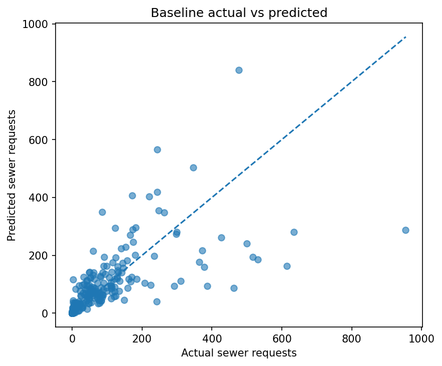
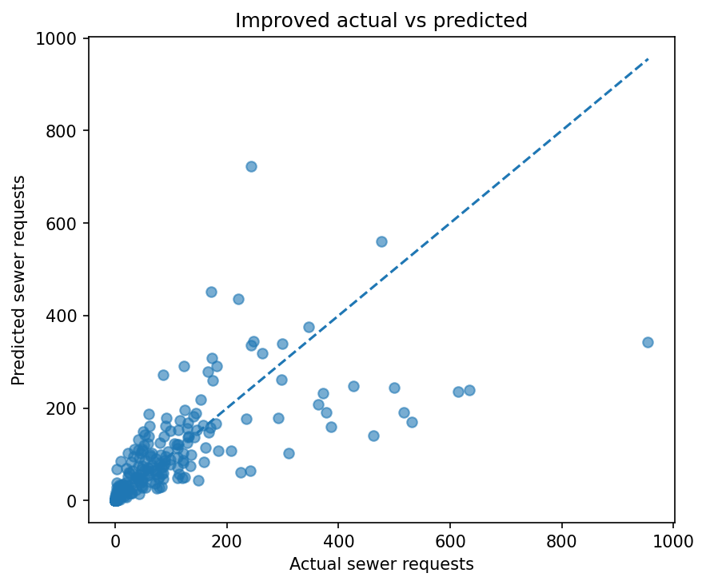
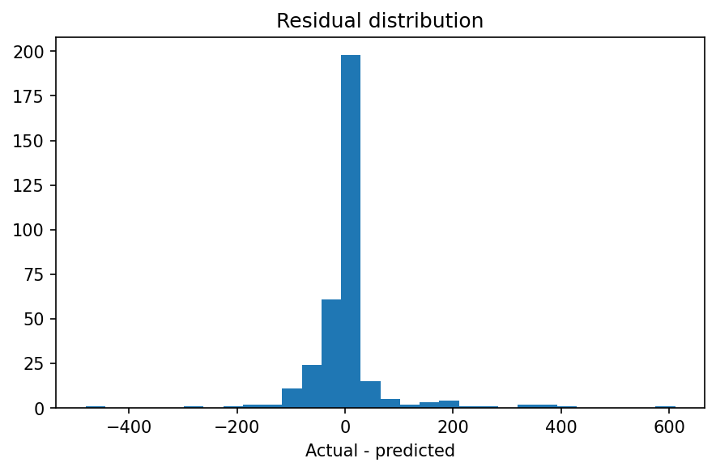
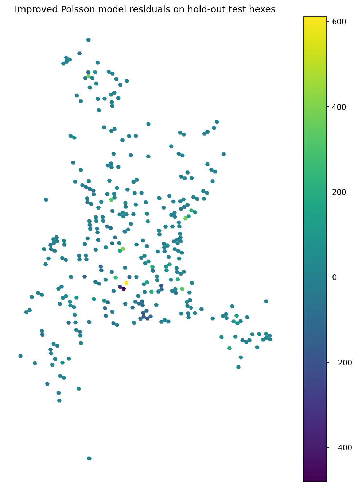

This report presents a two-stage modelling workflow for explaining and predicting the number of sewer blockage / overflow requests per H3 level 8 hex. The initial and improved Poisson models are trained and compared on the same fixed train and validation splits, and then evaluated on the same untouched hold-out test set. A Negative Binomial model is included as a sensitivity check because sewer request counts are plausibly overdispersed.
The analysis is primarily explanatory rather than purely predictive. The aim is to identify variables associated with higher sewer incident counts across the city. Given the limited feature set available in this assessment, the estimated relationships should be interpreted as associations rather than causal effects, because unobserved infrastructure and environmental factors may confound the observed relationships.
Hexes with fewer than 5 buildings were excluded from modelling. This defines a more realistic population at risk for sewer incidents and reduces the influence of structural-zero areas such as mountains, water, or other non-residential zones with little or no built environment.
A fixed train/validation/test workflow was retained even though the primary goal is explanatory. This provides a fair way to compare the initial and improved solutions and assess whether the fitted relationships generalise beyond the estimation sample.
The model explains cross-sectional variation in annual sewer request counts across hexes. It does not attempt to identify short-term causal shocks, such as the COVID-related reporting disruption observed in the exploratory analysis.
Recent work in other applied domains has shown that post hoc attribution methods for complex models can be unstable, which supports a preference here for directly interpretable models when the goal is to understand likely drivers rather than merely maximise predictive performance.
Reference: Arends BKO et al. Signal or noise? Evaluating commonly used attribution methods for explaining deep neural networks in electrocardiogram classification. European Heart Journal - Digital Health, 2025.
| split | rows | mean_target | zero_rate |
|---|---|---|---|
| full_available | 2252 | 57.726021 | 0.357460 |
| train | 1576 | 57.138959 | 0.364213 |
| validation | 338 | 54.156805 | 0.366864 |
| holdout_test | 338 | 64.032544 | 0.316568 |
Model: Poisson regression using service-request-derived features only
Reason: Simple, stable count model and a strong baseline for municipal request counts.
| stage | mae | rmse | mean_poisson_deviance | spearman |
|---|---|---|---|---|
| initial_solution_validation | 28.555632 | 72.743647 | 25.686878 | 0.920404 |
| initial_solution_test | 36.656231 | 84.088055 | 33.421637 | 0.931517 |

Model: Poisson regression with service-request-derived features plus Google Buildings features
Reason: The improvement step adds additional domain-relevant explanatory variables related to built density and built form, rather than changing to a less directly comparable model family.
| stage | mae | rmse | mean_poisson_deviance | spearman |
|---|---|---|---|---|
| improved_solution_validation | 27.564696 | 88.011406 | 26.107732 | 0.926962 |
| improved_solution_test | 33.903078 | 79.232290 | 28.727372 | 0.932803 |



Model: Negative Binomial GLM using the improved feature set
Reason: Counts of sewer incidents are plausibly overdispersed. This model is included as a sensitivity check to test whether the main driver story is robust to a distributional assumption better suited to overdispersed counts.
| stage | mae | rmse | mean_poisson_deviance | spearman |
|---|---|---|---|---|
| sensitivity_validation | 27.038615 | 75.259246 | 22.572011 | 0.925426 |
| sensitivity_test | 35.663841 | 83.325296 | 29.583942 | 0.932931 |
Driver analysis is based on the Negative Binomial sensitivity model, because it retains coefficient interpretability while being better aligned with overdispersed count data. Coefficients are interpreted through incidence-rate ratios. Values above 1 imply that higher feature values are associated with higher expected sewer request counts, holding other variables fixed.
| feature | coefficient | incidence_rate_ratio | p_value |
|---|---|---|---|
| log_non_target_requests | 1.209548 | 3.351970 | 5.487703e-129 |
| log_sd_building_area | 0.268585 | 1.308112 | 2.912697e-05 |
| log_building_count | 0.241408 | 1.273041 | 2.736011e-07 |
For log_non_target_requests, a one-unit increase is associated with the expected sewer request count being multiplied by 3.35, holding other variables fixed.
| feature | coefficient | incidence_rate_ratio | p_value |
|---|---|---|---|
| log_mean_building_area | -0.416402 | 0.659415 | 2.219574e-04 |
| diversity_ex_target | -0.009834 | 0.990214 | 1.497517e-09 |
For log_mean_building_area, a one-unit increase is associated with the expected sewer request count being multiplied by 0.66, or about 34% lower, holding other variables fixed.
The initial solution establishes a transparent baseline using only service-request-derived variables. The improved solution tests whether adding building-density and built-form features improves explanatory and predictive performance. The Negative Binomial model is retained as a sensitivity analysis for interpretation under overdispersion, rather than being treated as the primary improved model.
Because the model omits several important municipal and physical drivers, including sewer network topology, pipe age, maintenance history, rainfall, slope, and detailed population exposure, any driver statements should be interpreted cautiously. Residual spatial structure would suggest that these omitted factors still explain meaningful variation.
| step | seconds |
|---|---|
| load_and_prepare_features | 0.006227 |
| split_data | 0.001051 |
| baseline_training_and_validation | 0.014390 |
| improved_training_and_validation | 0.004384 |
| sensitivity_nb_training_and_validation | 0.007921 |
| baseline_refit_and_test | 0.004489 |
| improved_refit_and_test | 0.005694 |
| sensitivity_nb_refit_and_test | 0.007037 |
All outputs are written under /Users/marijnhazelbag/Documents/Github/ds_code_challenge/reports/sr, including metrics, figures, predictions, coefficients, timing logs, and this HTML report. The script is intended to run end-to-end with a single command and no manual interaction.